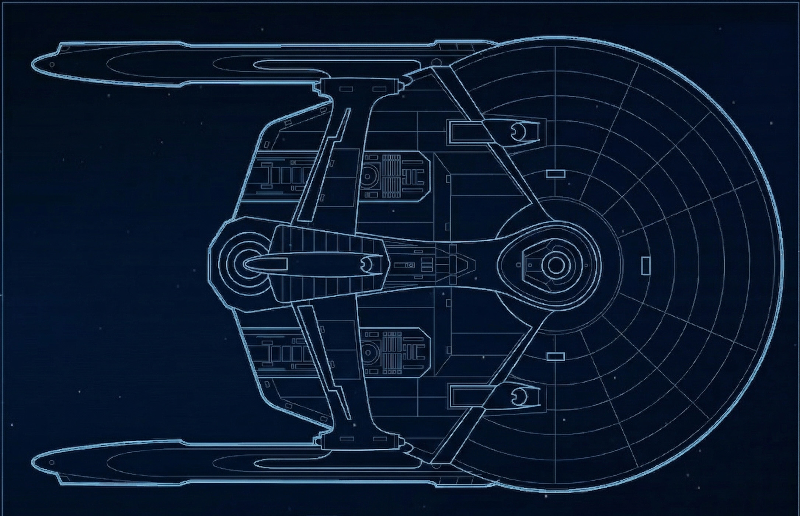
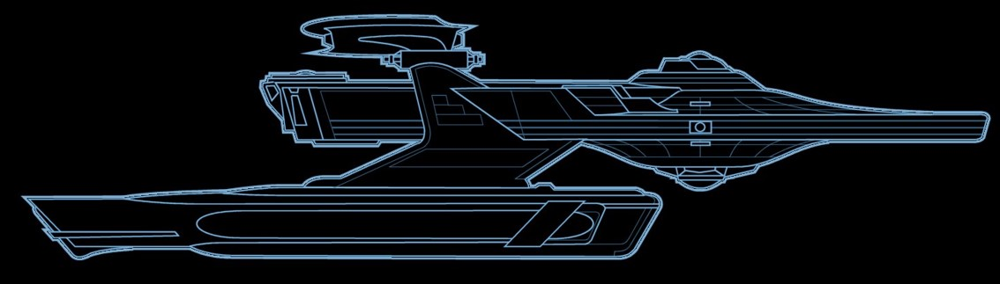
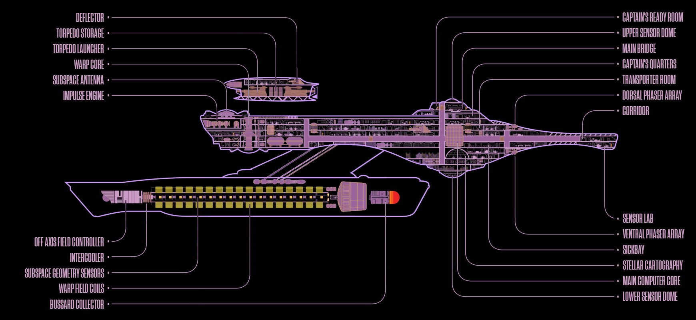

Vista Superiore

Vista Laterale

Schema Master Systems Display - MSD
Identificazione
Nome
USS Afrodite
Numero di Registro
NCC-1863
Classe
Miranda
Tipo
Incrociatore medio
Entrata in servizio
2381
Cantiere navale
ASDB Integration Section, Starbase 134 Integration Facility, Rigel IV
Dimensioni
Lunghezza
[Da definire] m
Larghezza
[Da definire] m
Altezza
[Da definire] m
Ponti
[Da definire]
Tonnellaggio
[Da definire] t
Propulsione & Velocità
Motore a curvatura
[Da definire]
Motore ad impulso
[Da definire]
Velocità di crociera
Warp [Da definire]
Velocità massima
Warp [Da definire]
Armamento & Difese
Phaser
[Da definire] batterie
Siluri fotoni
[Da definire] lanciasiluri
Scudi deflettori
[Da definire]
Scafo
Duranio/Tritanio
Equipaggio
Complemento ufficiali
[Da definire]
Complemento totale
[Da definire]
Passeggeri max
[Da definire]
Sistemi
Computer
LCARS [Da definire]
Sensori
[Da definire]
Teletrasporto
[Da definire] pad
Navette
[Da definire]
Holodeck
[Da definire]
Storia della Nave
[Inserire qui la storia e la descrizione della USS Afrodite. Questo testo segnaposto va sostituito con il contenuto reale della nave.]
La classe Miranda è una delle classi di navi stellari più versatili e longeve della Flotta Stellare della Federazione dei Pianeti Uniti. Introdotta nel 23° secolo, la classe Miranda è stata impiegata in ruoli che spaziano dall'esplorazione scientifica alla difesa di frontiera.